| # | Player | Score | P(top10) |
|---|---|---|---|
| 1 | Shreyas Iyer | 97 | 76% |
| 2 | Heinrich Klaasen | 95 | 92% |
| 3 | Rajat Patidar | 93 | 54% |
| 4 | Namboori Tilak Varma | 91 | 63% |
| 5 | Ishan Kishan | 85 | 50% |
| 6 | Naman Dhir | 83 | 44% |
| 7 | David Miller | 82 | 37% |
| 8 | Tim David | 82 | 45% |
| 9 | Suryakumar Yadav | 81 | 28% |
| 10 | Glenn Phillips | 81 | 34% |
| # | Player | Score | P(top10) |
|---|---|---|---|
| 1 | Varun Chakravarthy | 96 | 84% |
| 2 | Sunil Narine | 93 | 68% |
| 3 | Jasprit Bumrah | 91 | 60% |
| 4 | Lockie Ferguson | 90 | 68% |
| 5 | Rashid Khan | 90 | 58% |
| 6 | Axar Patel | 89 | 53% |
| 7 | Matheesha Pathirana | 89 | 68% |
| 8 | Bhuvneshwar Kumar | 87 | 49% |
| 9 | Kuldeep Yadav | 87 | 47% |
| 10 | Sikandar Raza | 85 | 50% |
Score = 0–100 reliability composite (percentile among eligible players). P(top10) = share of 100 match-level bootstrap resamples in which the player stays in the top 10. This measures uncertainty in the 2022–26 evidence and is not a forecast. Andre Russell (data rank #5) is excluded because he formally retired from the IPL on 30 Nov 2025.
SupeRR Selector Season 2 asks for two ordered top-10 lists (batters and bowlers) of the players who perform best under pressure, plus a report explaining how pressure was defined, how ratings were built, how comparisons were made fair, the evidence for the top 10, and the reliability and limitations of the method.
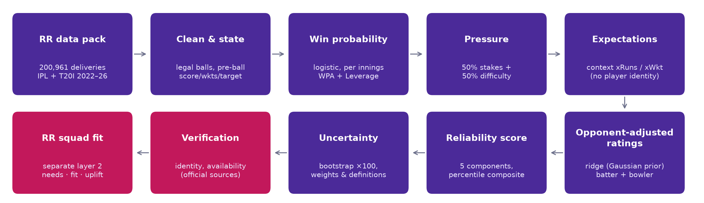
Primary source: the official RR data pack. It contains six CSVs (ball-by-ball, matches, competitions, teams, playing XIs, competition-team-player mapping) covering IPL 2022–2026, bilateral and multi-nation T20Is, and two A-team tournaments. The original archive is preserved unmodified (SHA-256 recorded), and all work runs on a copy.
| Item | Value |
|---|---|
| Deliveries (regulation innings) | 200,961 |
| Matches with ball-by-ball data | 867 |
| IPL matches | 367 |
| T20I matches | 470 |
| Distinct batters / bowlers | 888 / 647 |
| Date range | 2022-01-22 to 2026-11-01 |
other behaves as a no-ball. Treating it as legal would create 244 seven-ball overs. Legal balls exclude wides and both no-ball codes.Every pre-ball state variable uses only information available before the delivery: score, wickets in hand, legal balls left (respecting D/L-reduced innings), target, runs needed, and current and required rates.
Pressure cannot be observed directly, so it must be defined. We built two independent candidates, found that each had a blind spot, and combined them.
A win-probability model gives each team's chance of winning before every ball. The Leverage Index is the expected absolute swing in that probability from the next ball, normalised so the average ball = 1. A last-over chase needing 4 off 2 balls reaches about 30. A one-sided chase sits near 0.
| Component | Weight |
|---|---|
| Scoreboard gap (chase: required rate vs era par; batting first: projected shortfall vs par) | 25% |
| Wickets lost relative to balls used | 20% |
| Closeness of contest (from win probability) | 20% |
| Wickets in previous 12 balls (collapse) | 15% |
| Dot-ball share of previous 12 legal balls (squeeze) | 10% |
| Innings progress (share bowled)² | 10% |
A review (v1 → v2) fixed three flaws. Batting-first middle-overs collapses had been ignored (2.6% → 23.9% HIGH). There was a hard cliff between overs 15 and 16 (the largest jump fell from 39 to 5 percentage points). Leverage also stepped at phase boundaries.


LightGBM models estimate the runs and dismissal probability an average player would produce in each situation: over, wickets, chase state, bowling type and batter hand, plus the scoring environment. Separate models cover runs conceded and wickets for the bowler. Player identity is never a feature.
Batting value = (runs − expected runs) − C × (dismissed − expected dismissal probability). Bowling value is the mirror image. C is the cost of a wicket in that situation: the expected remaining runs with w wickets in hand minus with w − 1, for the same overs left. A wicket early in the innings costs more than one in the last over.
A ridge regression fits the per-ball value on batter and bowler effects together. Each player is rated net of the opponents actually faced. The ridge penalty acts as a Gaussian prior: small samples shrink towards average. Penalties were tuned out of time, fitting on 2022–24 and scoring 2025–26. Two ratings feed the score: pressure performance (a ridge on HIGH-pressure balls only) and usual ability (all balls).
Each player's HIGH-minus-ordinary difference is shrunk by empirical Bayes. The true spread of this difference is estimated by subtracting sampling noise from the observed spread. Each player keeps the share of his raw difference that his sample size justifies.
All models use a chronological split with matches kept whole: train 2022–24, validate 2025, test 2026. Models are chosen on validation only. Sophisticated models had to beat simple baselines.
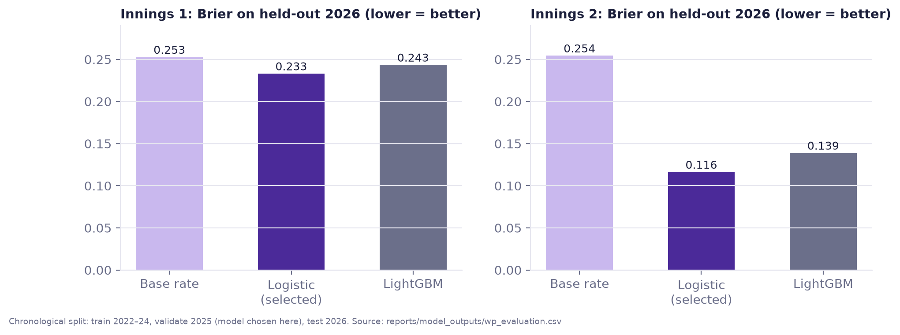
| Model (2026 test) | Brier | Log loss | AUC |
|---|---|---|---|
| Innings 1 · logistic | 0.233 | 0.664 | 0.694 |
| Innings 1 · base rate | 0.253 | 0.698 | 0.500 |
| Innings 2 · logistic | 0.116 | 0.361 | 0.927 |
| Innings 2 · base rate | 0.254 | 0.702 | 0.500 |
Expectation models beat an innings × over baseline on RMSE in both 2025 and 2026 (runs per ball, 2026: 1.808 vs 1.826). Ball-level dismissals are close to random, so the wicket models only match the baseline. A bug caught during validation: without the environment par, 2026 expected runs per ball came out at 1.35 against 1.51 actual. That would have flattered every 2026 batter.
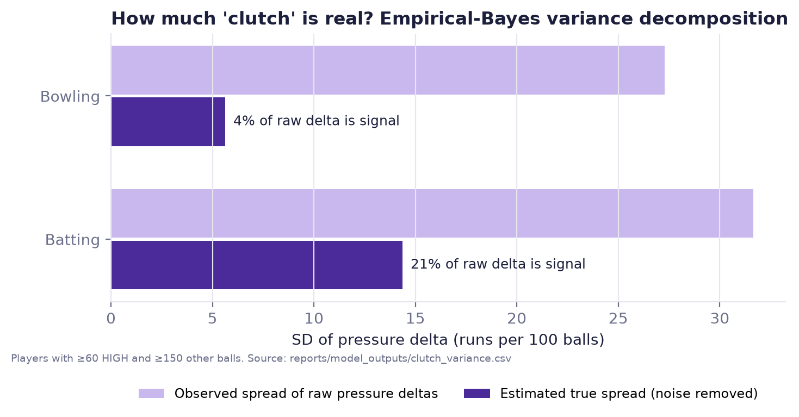
Player-level persistence from 2022–24 to 2025–26 tells the same story. Ordinary-situation value carries over (batting r ≈ 0.37–0.49). Pressure-only value does not (r ≈ 0), and adding pressure terms to the rating model never improved out-of-time prediction. Implication: a raw "clutch" table would mostly rank noise. Our score uses opponent-adjusted pressure performance, consistency and impact (all shrunk by sample size), anchored by underlying ability.
| Component | Weight | Definition |
|---|---|---|
| Pressure performance | 35% | Opponent-adjusted value on HIGH balls (ridge, shrunk) |
| Consistency | 20% | Share of pressure innings/spells with value ≥ 0 (Beta-Binomial shrunk) |
| Match impact | 20% | Win Probability Added per HIGH ball (empirical Bayes) |
| Vs own baseline | 15% | HIGH minus ordinary value (empirical Bayes) |
| Usual ability | 10% | All-ball opponent-adjusted rating (best predictor) |
The score is the weighted mean of component percentiles among eligible players (0–100), reported as whole numbers to avoid false precision. The prompt's starting weights were treated as a hypothesis. "Sample confidence" was dropped because shrinkage already uses sample size. "Role adaptability" moved to the squad-fit layer. Pressure performance and impact correlate (ρ ≈ 0.8), so a no-impact variant is also tested.
| Side | Variant | Top-10 kept | Spearman |
|---|---|---|---|
| batting | final | 10 | 1.0 |
| batting | equal | 9 | 0.996 |
| batting | prompt_hypothesis_mapped | 10 | 0.999 |
| batting | pressure_only | 10 | 0.971 |
| batting | no_impact | 9 | 0.987 |
| batting | predictive_tilt | 8 | 0.968 |
| batting | baseline_delta_heavy | 8 | 0.972 |
| bowling | final | 10 | 1.0 |
| bowling | equal | 9 | 0.997 |
| bowling | prompt_hypothesis_mapped | 10 | 0.999 |
| bowling | pressure_only | 9 | 0.968 |
| bowling | no_impact | 9 | 0.987 |
| bowling | predictive_tilt | 9 | 0.969 |
| bowling | baseline_delta_heavy | 9 | 0.974 |
| Side | Variant | Top-10 kept | Spearman |
|---|---|---|---|
| batting | blend_30lev_70rpi | 8 | 0.746 |
| bowling | blend_30lev_70rpi | 6 | 0.864 |
| batting | blend_70lev_30rpi | 7 | 0.877 |
| bowling | blend_70lev_30rpi | 7 | 0.905 |
| batting | high_top15pct | 7 | 0.757 |
| bowling | high_top15pct | 8 | 0.893 |
| batting | high_top30pct | 5 | 0.848 |
| bowling | high_top30pct | 6 | 0.868 |
Each variant re-runs the whole pipeline on the same eligible pool. The definition matters more than the weights.
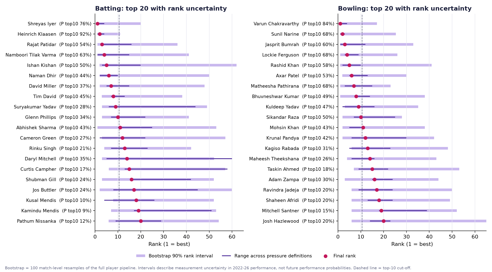
| # | Player | Role (data) | Score | HIGH balls | Pressure inns | Value/100 HIGH | SR HIGH / LOW | P(top 10) | 90% rank |
|---|---|---|---|---|---|---|---|---|---|
| 1 | Shreyas Iyer | Middle order (4-5) | 97 | 439 | 23 | +33.7 | 159 / 156 | 76% | 1–20 |
| 2 | Heinrich Klaasen | Middle order (4-5) | 95 | 310 | 17 | +39.0 | 171 / 168 | 92% | 1–11 |
| 3 | Rajat Patidar | Middle order (4-5) | 93 | 208 | 13 | +42.3 | 163 / 181 | 54% | 1–36 |
| 4 | Namboori Tilak Varma | Middle order (4-5) | 91 | 698 | 39 | +19.5 | 152 / 146 | 63% | 1–41 |
| 5 | Ishan Kishan | Opener | 85 | 370 | 19 | +24.5 | 152 / 146 | 50% | 1–62 |
| 6 | Naman Dhir | Finisher (6-7) | 83 | 227 | 12 | +33.2 | 169 / 177 | 44% | 2–50 |
| 7 | David Miller | Middle order (4-5) | 82 | 404 | 26 | +18.6 | 160 / 144 | 37% | 2–48 |
| 8 | Tim David | Finisher (6-7) | 82 | 469 | 34 | +22.5 | 168 / 192 | 45% | 2–38 |
| 9 | Suryakumar Yadav | Middle order (4-5) | 81 | 562 | 36 | +19.0 | 159 / 171 | 28% | 3–49 |
| 10 | Glenn Phillips | Middle order (4-5) | 81 | 298 | 14 | +28.5 | 134 / 175 | 34% | 3–41 |
Value/100 HIGH = runs above context expectation per 100 HIGH-pressure balls (wicket-cost adjusted, before opponent adjustment). Raw SR/economy are descriptive. HIGH-pressure balls cluster late in innings, so a lower raw rate can still be above what the situation demanded.
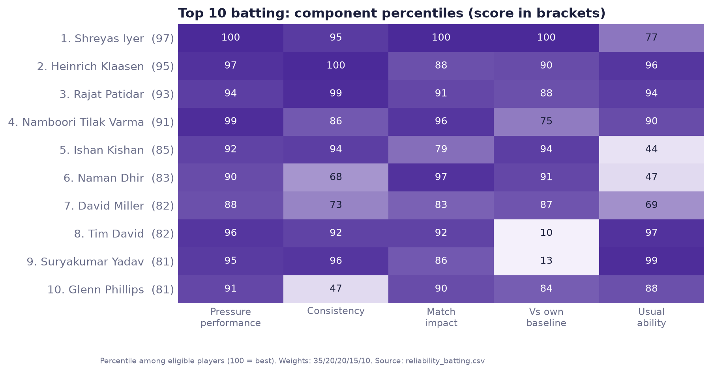
Each profile shows the verified identity and IPL 2027 status, the evidence, a comparison with the two strongest unselected players in the same data role, a bootstrap verdict on whether the difference is meaningful (clear ≥ 80%, moderate 65–80%, slight 55–65%, otherwise statistically indistinguishable), and how the player fits RR.
| Component (percentile) | Shreyas Iyer | Cameron Green | Daryl Mitchell |
|---|---|---|---|
| Pressure perf. | 100 | 87 | 81 |
| Consistency | 95 | 62 | 57 |
| Impact | 100 | 84 | 95 |
| Vs baseline | 100 | 83 | 74 |
| Usual | 77 | 68 | 71 |
| Score (rank) | 97 (1) | 79 (12) | 77 (14) |
| HIGH-pressure balls | 439 | 314 | 262 |
Descriptive: SR 159.0 under HIGH pressure vs 156.2 in LOW-pressure situations. Strongest: pressure perf., impact. Weakest: usual.

Best fits RR's Death-overs / finishing batting need (priority 81/100). Context value in the death phase is +15.7 per 100 balls over 304 balls (percentile 84 among eligible players). Indian player; squad-fit 85 (82 without the overseas-slot cost). Hypothetical model estimate, not a forecast: +15.3 runs per season if given the 2026 death balls of Ravindra Jadeja (74 balls).
| Component (percentile) | Heinrich Klaasen | Cameron Green | Daryl Mitchell |
|---|---|---|---|
| Pressure perf. | 97 | 87 | 81 |
| Consistency | 100 | 62 | 57 |
| Impact | 88 | 84 | 95 |
| Vs baseline | 90 | 83 | 74 |
| Usual | 96 | 68 | 71 |
| Score (rank) | 95 (2) | 79 (12) | 77 (14) |
| HIGH-pressure balls | 310 | 314 | 262 |
Descriptive: SR 171.0 under HIGH pressure vs 168.1 in LOW-pressure situations. Strongest: consistency, pressure perf.. Weakest: impact.

Best fits RR's Middle-overs batting need (priority 60/100). Context value in the middle phase is +12.4 per 100 balls over 921 balls (percentile 97 among eligible players). Overseas player; squad-fit 72 (75 without the overseas-slot cost). Hypothetical model estimate, not a forecast: +30.5 runs per season if given the 2026 middle balls of Dhruv Jurel (203 balls).
| Component (percentile) | Rajat Patidar | Cameron Green | Daryl Mitchell |
|---|---|---|---|
| Pressure perf. | 94 | 87 | 81 |
| Consistency | 99 | 62 | 57 |
| Impact | 91 | 84 | 95 |
| Vs baseline | 88 | 83 | 74 |
| Usual | 94 | 68 | 71 |
| Score (rank) | 93 (3) | 79 (12) | 77 (14) |
| HIGH-pressure balls | 208 | 314 | 262 |
Descriptive: SR 163.0 under HIGH pressure vs 180.8 in LOW-pressure situations. Strongest: consistency, pressure perf.. Weakest: vs baseline.
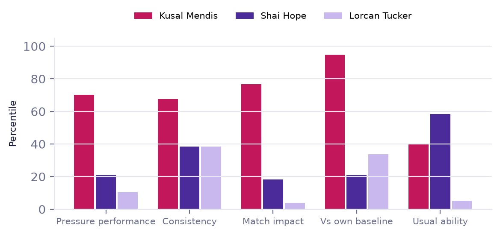
Best fits RR's Middle-overs batting need (priority 60/100). Context value in the middle phase is +8.3 per 100 balls over 603 balls (percentile 91 among eligible players). Indian player; squad-fit 77 (73 without the overseas-slot cost). Hypothetical model estimate, not a forecast: +22.1 runs per season if given the 2026 middle balls of Dhruv Jurel (203 balls).
| Component (percentile) | Namboori Tilak Varma | Cameron Green | Daryl Mitchell |
|---|---|---|---|
| Pressure perf. | 99 | 87 | 81 |
| Consistency | 86 | 62 | 57 |
| Impact | 96 | 84 | 95 |
| Vs baseline | 75 | 83 | 74 |
| Usual | 90 | 68 | 71 |
| Score (rank) | 91 (4) | 79 (12) | 77 (14) |
| HIGH-pressure balls | 698 | 314 | 262 |
Descriptive: SR 151.7 under HIGH pressure vs 146.0 in LOW-pressure situations. Strongest: pressure perf., impact. Weakest: vs baseline.

Best fits RR's Death-overs / finishing batting need (priority 81/100). Context value in the death phase is +21.5 per 100 balls over 554 balls (percentile 95 among eligible players). Indian player; squad-fit 89 (87 without the overseas-slot cost). Hypothetical model estimate, not a forecast: +19.7 runs per season if given the 2026 death balls of Ravindra Jadeja (74 balls).
| Component (percentile) | Ishan Kishan | Abhishek Sharma | Shubman Gill |
|---|---|---|---|
| Pressure perf. | 92 | 86 | 78 |
| Consistency | 94 | 82 | 71 |
| Impact | 79 | 74 | 64 |
| Vs baseline | 94 | 56 | 79 |
| Usual | 44 | 100 | 82 |
| Score (rank) | 85 (5) | 80 (11) | 74 (16) |
| HIGH-pressure balls | 370 | 143 | 202 |
Descriptive: SR 151.9 under HIGH pressure vs 145.8 in LOW-pressure situations. Strongest: consistency, vs baseline. Weakest: usual.

Best fits RR's Middle-overs batting need (priority 60/100). Context value in the middle phase is +3.4 per 100 balls over 1011 balls (percentile 67 among eligible players). Indian player; squad-fit 68 (63 without the overseas-slot cost). Hypothetical model estimate, not a forecast: +12.1 runs per season if given the 2026 middle balls of Dhruv Jurel (203 balls).
| Component (percentile) | Naman Dhir | Rinku Singh | Jimmy Neesham |
|---|---|---|---|
| Pressure perf. | 90 | 82 | 55 |
| Consistency | 68 | 87 | 47 |
| Impact | 97 | 82 | 75 |
| Vs baseline | 91 | 53 | 77 |
| Usual | 47 | 78 | 32 |
| Score (rank) | 83 (6) | 78 (13) | 58 (33) |
| HIGH-pressure balls | 227 | 377 | 165 |
Descriptive: SR 169.2 under HIGH pressure vs 177.2 in LOW-pressure situations. Strongest: impact, vs baseline. Weakest: usual.

Best fits RR's Death-overs / finishing batting need (priority 81/100). Context value in the death phase is +8.3 per 100 balls over 180 balls (percentile 61 among eligible players). Indian player; squad-fit 77 (73 without the overseas-slot cost). Hypothetical model estimate, not a forecast: +9.9 runs per season if given the 2026 death balls of Ravindra Jadeja (74 balls).
| Component (percentile) | David Miller | Cameron Green | Daryl Mitchell |
|---|---|---|---|
| Pressure perf. | 88 | 87 | 81 |
| Consistency | 73 | 62 | 57 |
| Impact | 83 | 84 | 95 |
| Vs baseline | 87 | 83 | 74 |
| Usual | 69 | 68 | 71 |
| Score (rank) | 82 (7) | 79 (12) | 77 (14) |
| HIGH-pressure balls | 404 | 314 | 262 |
Descriptive: SR 160.4 under HIGH pressure vs 144.0 in LOW-pressure situations. Strongest: pressure perf., vs baseline. Weakest: usual.
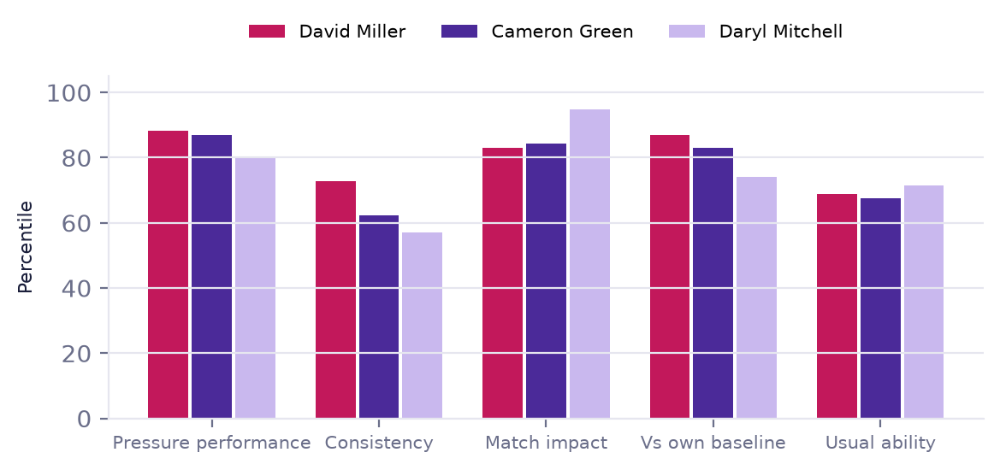
Best fits RR's Death-overs / finishing batting need (priority 81/100). Context value in the death phase is +7.9 per 100 balls over 496 balls (percentile 60 among eligible players). Overseas player; squad-fit 69 (72 without the overseas-slot cost). Hypothetical model estimate, not a forecast: +9.6 runs per season if given the 2026 death balls of Ravindra Jadeja (74 balls).
| Component (percentile) | Tim David | Rinku Singh | Jimmy Neesham |
|---|---|---|---|
| Pressure perf. | 96 | 82 | 55 |
| Consistency | 92 | 87 | 47 |
| Impact | 92 | 82 | 75 |
| Vs baseline | 10 | 53 | 77 |
| Usual | 97 | 78 | 32 |
| Score (rank) | 82 (8) | 78 (13) | 58 (33) |
| HIGH-pressure balls | 469 | 377 | 165 |
Descriptive: SR 168.0 under HIGH pressure vs 192.3 in LOW-pressure situations. Strongest: usual, pressure perf.. Weakest: vs baseline.
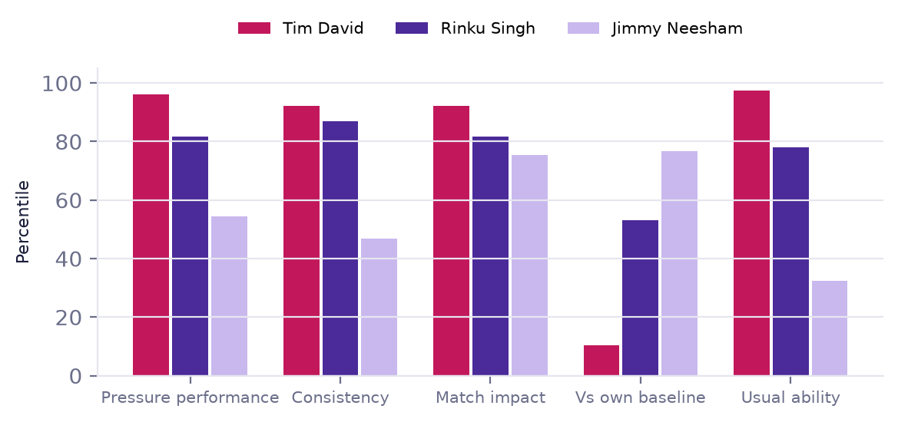
Best fits RR's Death-overs / finishing batting need (priority 81/100). Context value in the death phase is +19.6 per 100 balls over 573 balls (percentile 90 among eligible players). Overseas player; squad-fit 80 (85 without the overseas-slot cost). Hypothetical model estimate, not a forecast: +18.3 runs per season if given the 2026 death balls of Ravindra Jadeja (74 balls).
| Component (percentile) | Suryakumar Yadav | Cameron Green | Daryl Mitchell |
|---|---|---|---|
| Pressure perf. | 95 | 87 | 81 |
| Consistency | 96 | 62 | 57 |
| Impact | 86 | 84 | 95 |
| Vs baseline | 13 | 83 | 74 |
| Usual | 99 | 68 | 71 |
| Score (rank) | 81 (9) | 79 (12) | 77 (14) |
| HIGH-pressure balls | 562 | 314 | 262 |
Descriptive: SR 158.5 under HIGH pressure vs 171.4 in LOW-pressure situations. Strongest: usual, consistency. Weakest: vs baseline.
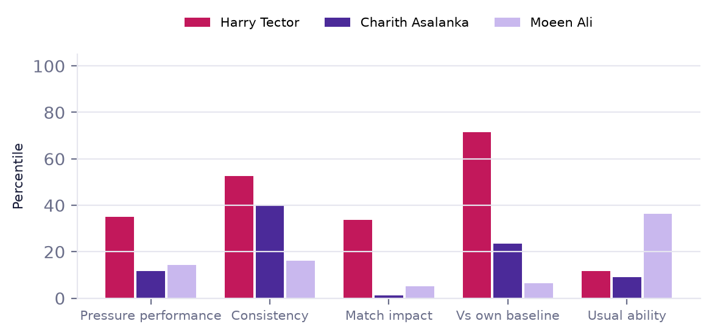
Best fits RR's Death-overs / finishing batting need (priority 81/100). Context value in the death phase is +22.6 per 100 balls over 361 balls (percentile 98 among eligible players). Indian player; squad-fit 90 (88 without the overseas-slot cost). Hypothetical model estimate, not a forecast: +20.4 runs per season if given the 2026 death balls of Ravindra Jadeja (74 balls).
| Component (percentile) | Glenn Phillips | Cameron Green | Daryl Mitchell |
|---|---|---|---|
| Pressure perf. | 91 | 87 | 81 |
| Consistency | 47 | 62 | 57 |
| Impact | 90 | 84 | 95 |
| Vs baseline | 84 | 83 | 74 |
| Usual | 88 | 68 | 71 |
| Score (rank) | 81 (10) | 79 (12) | 77 (14) |
| HIGH-pressure balls | 298 | 314 | 262 |
Descriptive: SR 133.6 under HIGH pressure vs 174.7 in LOW-pressure situations. Strongest: pressure perf., impact. Weakest: consistency.
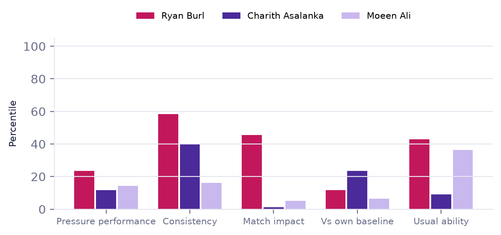
Best fits RR's Death-overs / finishing batting need (priority 81/100). Context value in the death phase is +16.9 per 100 balls over 242 balls (percentile 85 among eligible players). Overseas player; squad-fit 78 (83 without the overseas-slot cost). Hypothetical model estimate, not a forecast: +16.2 runs per season if given the 2026 death balls of Ravindra Jadeja (74 balls).
| # | Player | Role (data) | Score | HIGH balls | Pressure spells | Value/100 HIGH | Econ HIGH / LOW | P(top 10) | 90% rank |
|---|---|---|---|---|---|---|---|---|---|
| 1 | Varun Chakravarthy | Middle-overs | 96 | 400 | 33 | +35.1 | 7.30 / 8.48 | 84% | 1–17 |
| 2 | Sunil Narine | Middle-overs | 93 | 276 | 22 | +35.3 | 6.20 / 7.26 | 68% | 1–25 |
| 3 | Jasprit Bumrah | Multi-phase | 91 | 374 | 30 | +36.0 | 7.16 / 7.63 | 60% | 1–33 |
| 4 | Lockie Ferguson | Multi-phase | 90 | 229 | 20 | +35.0 | 7.81 / 9.94 | 68% | 1–26 |
| 5 | Rashid Khan | Middle-overs | 90 | 573 | 48 | +21.6 | 7.45 / 7.72 | 58% | 1–41 |
| 6 | Axar Patel | Middle-overs | 89 | 581 | 52 | +16.7 | 7.18 / 7.92 | 53% | 1–30 |
| 7 | Matheesha Pathirana | Death specialist | 89 | 278 | 23 | +37.1 | 8.55 / 8.24 | 68% | 1–23 |
| 8 | Bhuvneshwar Kumar | Powerplay specialist | 87 | 429 | 39 | +37.7 | 9.37 / 7.86 | 49% | 1–38 |
| 9 | Kuldeep Yadav | Middle-overs | 87 | 501 | 41 | +22.7 | 7.71 / 8.80 | 47% | 3–35 |
| 10 | Sikandar Raza | Middle-overs | 85 | 215 | 16 | +34.6 | 6.28 / 7.10 | 50% | 2–28 |
Value/100 HIGH = runs above context expectation per 100 HIGH-pressure balls (wicket-cost adjusted, before opponent adjustment). Raw SR/economy are descriptive. HIGH-pressure balls cluster late in innings, so a lower raw rate can still be above what the situation demanded.

Each profile shows the verified identity and IPL 2027 status, the evidence, a comparison with the two strongest unselected players in the same data role, a bootstrap verdict on whether the difference is meaningful (clear ≥ 80%, moderate 65–80%, slight 55–65%, otherwise statistically indistinguishable), and how the player fits RR.
| Component (percentile) | Varun Chakravarthy | Krunal Pandya | Adam Zampa |
|---|---|---|---|
| Pressure perf. | 99 | 84 | 79 |
| Consistency | 99 | 82 | 72 |
| Impact | 97 | 95 | 91 |
| Vs baseline | 84 | 77 | 97 |
| Usual | 100 | 80 | 23 |
| Score (rank) | 96 (1) | 84 (12) | 77 (16) |
| HIGH-pressure balls | 400 | 264 | 323 |
Descriptive: economy 7.30 under HIGH pressure vs 8.48 in LOW; 30 HIGH-pressure wickets. Strongest: usual, pressure perf.. Weakest: vs baseline.

Best fits RR's Middle-overs bowling need (priority 56/100). Context value in the middle phase is +15.9 per 100 balls over 1497 balls (percentile 99 among eligible players). Indian player; squad-fit 78 (74 without the overseas-slot cost). Hypothetical model estimate, not a forecast: +26.0 runs per season if given the 2026 middle balls of Yash Punja (156 balls).
| Component (percentile) | Sunil Narine | Krunal Pandya | Adam Zampa |
|---|---|---|---|
| Pressure perf. | 92 | 84 | 79 |
| Consistency | 88 | 82 | 72 |
| Impact | 100 | 95 | 91 |
| Vs baseline | 89 | 77 | 97 |
| Usual | 97 | 80 | 23 |
| Score (rank) | 93 (2) | 84 (12) | 77 (16) |
| HIGH-pressure balls | 276 | 264 | 323 |
Descriptive: economy 6.20 under HIGH pressure vs 7.26 in LOW; 15 HIGH-pressure wickets. Strongest: impact, usual. Weakest: consistency.
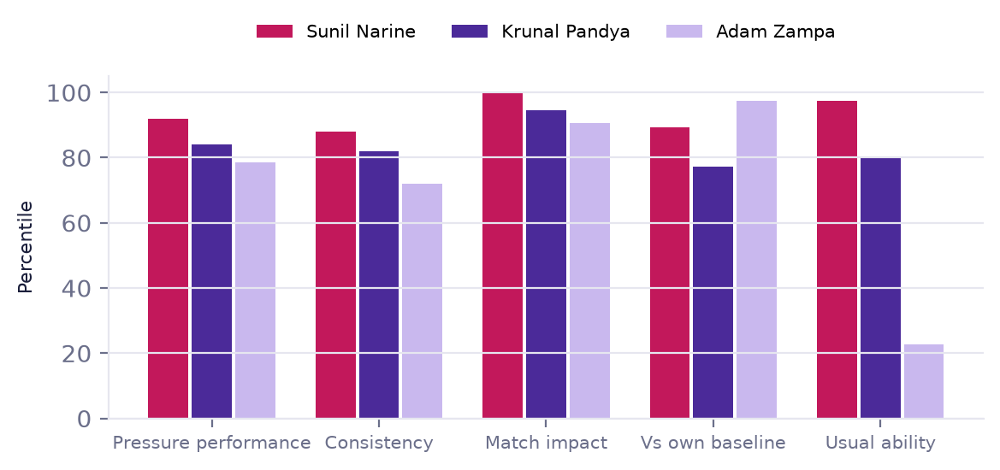
Best fits RR's Death-overs bowling need (priority 61/100). Context value in the death phase is +20.5 per 100 balls over 220 balls (percentile 97 among eligible players). Overseas player; squad-fit 72 (76 without the overseas-slot cost). Hypothetical model estimate, not a forecast: +10.3 runs per season if given the 2026 death balls of Tushar Deshpande (48 balls).
| Component (percentile) | Jasprit Bumrah | Maheesh Theekshana | Joshua Little |
|---|---|---|---|
| Pressure perf. | 97 | 83 | 81 |
| Consistency | 76 | 63 | 25 |
| Impact | 96 | 84 | 64 |
| Vs baseline | 83 | 92 | 87 |
| Usual | 99 | 56 | 44 |
| Score (rank) | 91 (3) | 78 (14) | 64 (23) |
| HIGH-pressure balls | 374 | 293 | 202 |
Descriptive: economy 7.16 under HIGH pressure vs 7.63 in LOW; 25 HIGH-pressure wickets. Strongest: usual, pressure perf.. Weakest: consistency.

Best fits RR's Death-overs bowling need (priority 61/100). Context value in the death phase is +27.5 per 100 balls over 566 balls (percentile 98 among eligible players). Indian player; squad-fit 80 (76 without the overseas-slot cost). Hypothetical model estimate, not a forecast: +13.6 runs per season if given the 2026 death balls of Tushar Deshpande (48 balls).
| Component (percentile) | Lockie Ferguson | Maheesh Theekshana | Joshua Little |
|---|---|---|---|
| Pressure perf. | 89 | 83 | 81 |
| Consistency | 100 | 63 | 25 |
| Impact | 93 | 84 | 64 |
| Vs baseline | 91 | 92 | 87 |
| Usual | 67 | 56 | 44 |
| Score (rank) | 90 (4) | 78 (14) | 64 (23) |
| HIGH-pressure balls | 229 | 293 | 202 |
Descriptive: economy 7.81 under HIGH pressure vs 9.94 in LOW; 18 HIGH-pressure wickets. Strongest: consistency, impact. Weakest: usual.
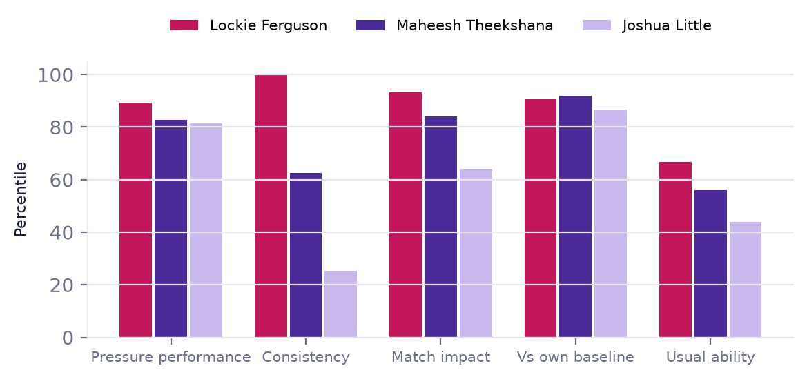
Best fits RR's Powerplay bowling need (priority 49/100). Context value in the powerplay phase is +5.7 per 100 balls over 352 balls (percentile 79 among eligible players). Overseas player; squad-fit 60 (61 without the overseas-slot cost). Hypothetical model estimate, not a forecast: +6.1 runs per season if given the 2026 powerplay balls of Brijesh Sharma (72 balls).
| Component (percentile) | Rashid Khan | Krunal Pandya | Adam Zampa |
|---|---|---|---|
| Pressure perf. | 95 | 84 | 79 |
| Consistency | 96 | 82 | 72 |
| Impact | 88 | 95 | 91 |
| Vs baseline | 71 | 77 | 97 |
| Usual | 95 | 80 | 23 |
| Score (rank) | 90 (5) | 84 (12) | 77 (16) |
| HIGH-pressure balls | 573 | 264 | 323 |
Descriptive: economy 7.45 under HIGH pressure vs 7.72 in LOW; 35 HIGH-pressure wickets. Strongest: consistency, pressure perf.. Weakest: vs baseline.

Best fits RR's Death-overs bowling need (priority 61/100). Context value in the death phase is +13.0 per 100 balls over 528 balls (percentile 94 among eligible players). Overseas player; squad-fit 71 (75 without the overseas-slot cost). Hypothetical model estimate, not a forecast: +6.7 runs per season if given the 2026 death balls of Tushar Deshpande (48 balls).
| Component (percentile) | Axar Patel | Krunal Pandya | Adam Zampa |
|---|---|---|---|
| Pressure perf. | 88 | 84 | 79 |
| Consistency | 89 | 82 | 72 |
| Impact | 99 | 95 | 91 |
| Vs baseline | 95 | 77 | 97 |
| Usual | 65 | 80 | 23 |
| Score (rank) | 89 (6) | 84 (12) | 77 (16) |
| HIGH-pressure balls | 581 | 264 | 323 |
Descriptive: economy 7.18 under HIGH pressure vs 7.92 in LOW; 30 HIGH-pressure wickets. Strongest: impact, vs baseline. Weakest: usual.
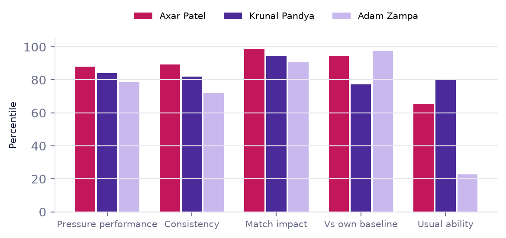
Best fits RR's Powerplay bowling need (priority 49/100). Context value in the powerplay phase is +6.6 per 100 balls over 651 balls (percentile 85 among eligible players). Indian player; squad-fit 69 (64 without the overseas-slot cost). Hypothetical model estimate, not a forecast: +6.7 runs per season if given the 2026 powerplay balls of Brijesh Sharma (72 balls).
| Component (percentile) | Matheesha Pathirana | T Natarajan | Mustafizur Rahman |
|---|---|---|---|
| Pressure perf. | 96 | 56 | 61 |
| Consistency | 91 | 95 | 40 |
| Impact | 69 | 9 | 25 |
| Vs baseline | 100 | 61 | 24 |
| Usual | 81 | 48 | 77 |
| Score (rank) | 89 (7) | 54 (33) | 46 (41) |
| HIGH-pressure balls | 278 | 228 | 305 |
Descriptive: economy 8.55 under HIGH pressure vs 8.24 in LOW; 24 HIGH-pressure wickets. Strongest: vs baseline, pressure perf.. Weakest: impact.

Best fits RR's Death-overs bowling need (priority 61/100). Context value in the death phase is +14.0 per 100 balls over 605 balls (percentile 95 among eligible players). Overseas player; squad-fit 71 (75 without the overseas-slot cost). Hypothetical model estimate, not a forecast: +7.1 runs per season if given the 2026 death balls of Tushar Deshpande (48 balls).
| Component (percentile) | Bhuvneshwar Kumar | Mohsin Khan | Kagiso Rabada |
|---|---|---|---|
| Pressure perf. | 100 | 85 | 91 |
| Consistency | 65 | 93 | 87 |
| Impact | 79 | 89 | 68 |
| Vs baseline | 88 | 64 | 85 |
| Usual | 96 | 88 | 75 |
| Score (rank) | 87 (8) | 85 (11) | 83 (13) |
| HIGH-pressure balls | 429 | 165 | 355 |
Descriptive: economy 9.37 under HIGH pressure vs 7.86 in LOW; 33 HIGH-pressure wickets. Strongest: pressure perf., usual. Weakest: consistency.

Best fits RR's Powerplay bowling need (priority 49/100). Context value in the powerplay phase is +14.2 per 100 balls over 1373 balls (percentile 98 among eligible players). Indian player; squad-fit 74 (69 without the overseas-slot cost). Hypothetical model estimate, not a forecast: +12.2 runs per season if given the 2026 powerplay balls of Brijesh Sharma (72 balls).
| Component (percentile) | Kuldeep Yadav | Krunal Pandya | Adam Zampa |
|---|---|---|---|
| Pressure perf. | 93 | 84 | 79 |
| Consistency | 84 | 82 | 72 |
| Impact | 87 | 95 | 91 |
| Vs baseline | 69 | 77 | 97 |
| Usual | 93 | 80 | 23 |
| Score (rank) | 87 (9) | 84 (12) | 77 (16) |
| HIGH-pressure balls | 501 | 264 | 323 |
Descriptive: economy 7.71 under HIGH pressure vs 8.80 in LOW; 29 HIGH-pressure wickets. Strongest: pressure perf., usual. Weakest: vs baseline.
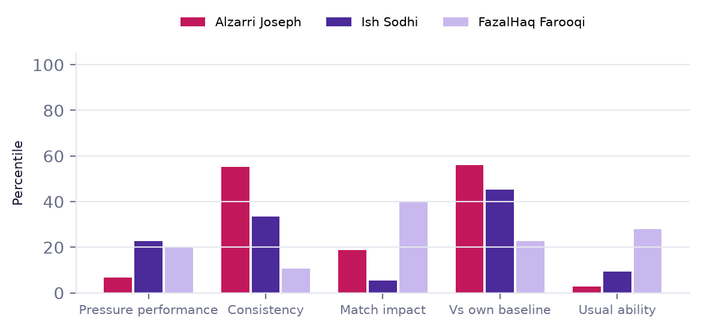
Best fits RR's Death-overs bowling need (priority 61/100). Context value in the death phase is +10.9 per 100 balls over 303 balls (percentile 92 among eligible players). Indian player; squad-fit 78 (74 without the overseas-slot cost). Hypothetical model estimate, not a forecast: +5.7 runs per season if given the 2026 death balls of Tushar Deshpande (48 balls).
| Component (percentile) | Sikandar Raza | Krunal Pandya | Adam Zampa |
|---|---|---|---|
| Pressure perf. | 87 | 84 | 79 |
| Consistency | 93 | 82 | 72 |
| Impact | 92 | 95 | 91 |
| Vs baseline | 96 | 77 | 97 |
| Usual | 36 | 80 | 23 |
| Score (rank) | 85 (10) | 84 (12) | 77 (16) |
| HIGH-pressure balls | 215 | 264 | 323 |
Descriptive: economy 6.28 under HIGH pressure vs 7.10 in LOW; 12 HIGH-pressure wickets. Strongest: vs baseline, consistency. Weakest: usual.
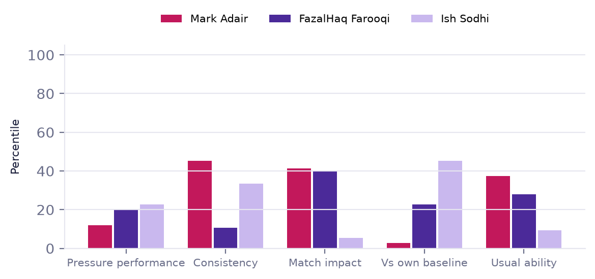
Best fits RR's Middle-overs bowling need (priority 56/100). Context value in the middle phase is +4.2 per 100 balls over 917 balls (percentile 72 among eligible players). Overseas player; squad-fit 61 (63 without the overseas-slot cost). Hypothetical model estimate, not a forecast: +7.7 runs per season if given the 2026 middle balls of Yash Punja (156 balls).
These players were considered seriously. Most beat our #10 in 30–50% of resamples. They remain credible alternatives, especially for the RR needs noted.
| Side | Rank | Player | Role | Score | Gap to #10 | P(top10) | P(beats #10) | Main shortfall vs #10 | Rank range (defs) |
|---|---|---|---|---|---|---|---|---|---|
| batting | 11 | Abhishek Sharma | Opener | 79.7 | 0.9 | 0.43 | 0.5 | delta percentile -0.29 | 10-25 |
| batting | 12 | Cameron Green | Middle order (4-5) | 79.0 | 1.6 | 0.27 | 0.37 | usual percentile -0.21 | 2-22 |
| batting | 13 | Rinku Singh | Finisher (6-7) | 78.2 | 2.4 | 0.21 | 0.43 | delta percentile -0.31 | 7-23 |
| batting | 14 | Daryl Mitchell | Middle order (4-5) | 76.8 | 3.8 | 0.35 | 0.51 | usual percentile -0.17 | 5-60 |
| batting | 15 | Curtis Campher | Middle order (4-5) | 75.8 | 4.8 | 0.17 | 0.3 | usual percentile -0.65 | 13-58 |
| bowling | 11 | Mohsin Khan | Powerplay specialist | 84.7 | 0.6 | 0.43 | 0.47 | delta percentile -0.32 | 5-11 |
| bowling | 12 | Krunal Pandya | Middle-overs | 84.3 | 0.9 | 0.42 | 0.44 | delta percentile -0.19 | 6-30 |
| bowling | 13 | Kagiso Rabada | Powerplay specialist | 82.9 | 2.3 | 0.31 | 0.31 | impact percentile -0.24 | 5-23 |
| bowling | 14 | Maheesh Theekshana | Multi-phase | 77.7 | 7.6 | 0.26 | 0.34 | consistency percentile -0.30 | 6-16 |
| bowling | 15 | Taskin Ahmed | Powerplay specialist | 77.5 | 7.8 | 0.18 | 0.28 | delta percentile -0.20 | 9-22 |
Excluded despite statistical eligibility: Dinesh Karthik (no data 2025-26), Matthew Wade (no data 2025-26), Mohammad Rizwan (no data 2025-26), Iftikhar Ahmed (no data 2025-26), Andre Russell (Andre Russell: retired from IPL 30 Nov 2025 (S7)), Naveen ul Haq (no data 2025-26), Riley Meredith (no data 2025-26).
The 2026 squad (27 players) is verified against the data pack and official RR announcements. These record 13 retentions and the trades of Samson for Jadeja and Curran and of Rana for Ferreira. RR entered the auction with ₹16.05 cr and one overseas slot. Parag captained; Curran was ruled out for the season. RR won 9 of 16 matches and lost Qualifier 2. The IPL 2027 squad is pending: retentions are due 17 Nov 2026, and the mini-auction is on 16 Dec 2026 (Goa; maximum 25 players, 8 overseas).


| RR batter | Role | Balls | SR | SR HIGH | Pressure pctile | Eligible / rank |
|---|---|---|---|---|---|---|
| Yashasvi Jaiswal | Opener | 1872 | 156.4 | 206.7 | 94 | No (sample) |
| Dhruv Jurel | Middle order (4-5) | 798 | 151.3 | 135.4 | 6 | Yes, #66 |
| Ravindra Jadeja | Finisher (6-7) | 958 | 135.1 | 140.0 | 20 | Yes, #68 |
| Riyan Parag | Middle order (4-5) | 1084 | 151.5 | 148.6 | 45 | Yes, #53 |
| Shimron Hetmyer | Middle order (4-5) | 1245 | 151.6 | 144.1 | 38 | Yes, #58 |
| Dasun Shanaka | Finisher (6-7) | 774 | 139.5 | 141.2 | 52 | Yes, #42 |
| Sam Curran | Finisher (6-7) | 858 | 130.8 | 135.8 | 23 | Yes, #65 |
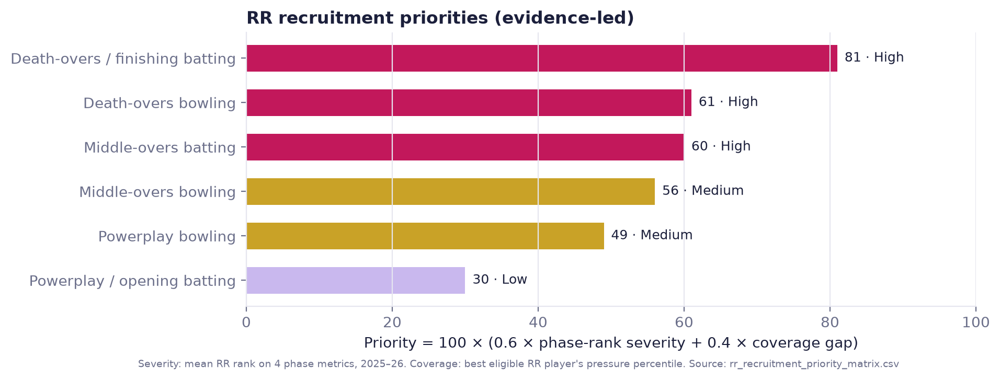
Squad fit is a separate layer, scored as follows:
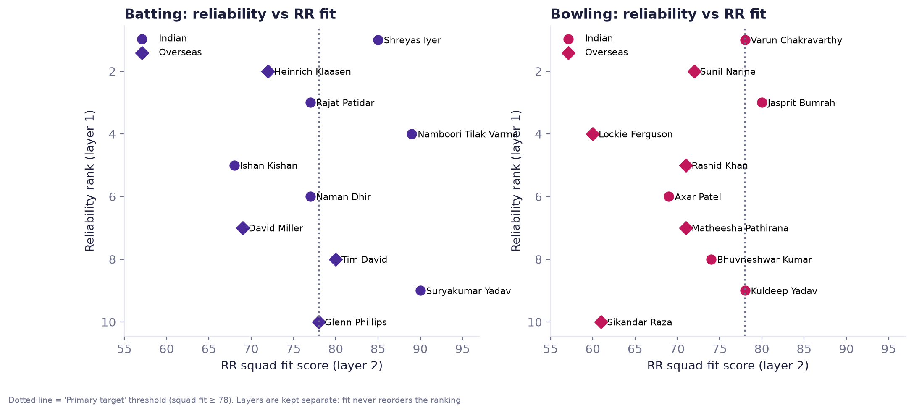
| Side | Rank | Player | Ind/Ovs | RR need | Fit | Top alternative | P(beats alt.) | Uplift* (runs) | Tier |
|---|---|---|---|---|---|---|---|---|---|
| batting | 1 | Shreyas Iyer | Indian | Death-overs / finishing batting | 85 | Cameron Green | 0.89 | 15.3 | Primary target |
| batting | 2 | Heinrich Klaasen | Overseas | Middle-overs batting | 72 | Cameron Green | 0.89 | 30.5 | Strong option |
| batting | 3 | Rajat Patidar | Indian | Middle-overs batting | 77 | Cameron Green | 0.73 | 22.1 | Strong option |
| batting | 4 | Namboori Tilak Varma | Indian | Death-overs / finishing batting | 89 | Cameron Green | 0.69 | 19.7 | Primary target |
| batting | 5 | Ishan Kishan | Indian | Middle-overs batting | 68 | Abhishek Sharma | 0.53 | 12.1 | Situational / depth |
| batting | 6 | Naman Dhir | Indian | Death-overs / finishing batting | 77 | Rinku Singh | 0.61 | 9.9 | Strong option |
| batting | 7 | David Miller | Overseas | Death-overs / finishing batting | 69 | Cameron Green | 0.6 | 9.6 | Situational / depth |
| batting | 8 | Tim David | Overseas | Death-overs / finishing batting | 80 | Rinku Singh | 0.64 | 18.3 | Primary target |
| batting | 9 | Suryakumar Yadav | Indian | Death-overs / finishing batting | 90 | Cameron Green | 0.59 | 20.4 | Primary target |
| batting | 10 | Glenn Phillips | Overseas | Death-overs / finishing batting | 78 | Cameron Green | 0.63 | 16.2 | Primary target |
| bowling | 1 | Varun Chakravarthy | Indian | Middle-overs bowling | 78 | Krunal Pandya | 0.78 | 26.0 | Primary target |
| bowling | 2 | Sunil Narine | Overseas | Death-overs bowling | 72 | Krunal Pandya | 0.64 | 10.3 | Strong option |
| bowling | 3 | Jasprit Bumrah | Indian | Death-overs bowling | 80 | Maheesh Theekshana | 0.7 | 13.6 | Primary target |
| bowling | 4 | Lockie Ferguson | Overseas | Powerplay bowling | 60 | Maheesh Theekshana | 0.75 | 6.1 | Situational / depth |
| bowling | 5 | Rashid Khan | Overseas | Death-overs bowling | 71 | Krunal Pandya | 0.63 | 6.7 | Strong option |
| bowling | 6 | Axar Patel | Indian | Powerplay bowling | 69 | Krunal Pandya | 0.59 | 6.7 | Situational / depth |
| bowling | 7 | Matheesha Pathirana | Overseas | Death-overs bowling | 71 | T Natarajan | 0.96 | 7.1 | Strong option |
| bowling | 8 | Bhuvneshwar Kumar | Indian | Powerplay bowling | 74 | Mohsin Khan | 0.55 | 12.2 | Strong option |
| bowling | 9 | Kuldeep Yadav | Indian | Death-overs bowling | 78 | Krunal Pandya | 0.53 | 5.7 | Primary target |
| bowling | 10 | Sikandar Raza | Overseas | Middle-overs bowling | 61 | Krunal Pandya | 0.56 | 7.7 | Situational / depth |
*Hypothetical model estimate, not a forecast: the player's phase value minus that of RR's weakest 2026 regular in the phase, times that regular's 2026 balls. It ignores role interactions and opposition.
IPL 2027 rules as reported (SportsTak, citing a BCCI communique of 2 Nov 2026): mini-auction, no retention cap, no Right-to-Match, maximum 25 players and 8 overseas. The IPL 2027 purse is not verified, so no financial claims are made. Every recommendation is conditional on the 17 Nov retentions.
| # | Player | Score |
|---|---|---|
| 1 | Shreyas Iyer | 97 |
| 2 | Heinrich Klaasen | 95 |
| 3 | Rajat Patidar | 93 |
| 4 | Namboori Tilak Varma | 91 |
| 5 | Ishan Kishan | 85 |
| 6 | Naman Dhir | 83 |
| 7 | David Miller | 82 |
| 8 | Tim David | 82 |
| 9 | Suryakumar Yadav | 81 |
| 10 | Glenn Phillips | 81 |
| # | Player | Score |
|---|---|---|
| 1 | Varun Chakravarthy | 96 |
| 2 | Sunil Narine | 93 |
| 3 | Jasprit Bumrah | 91 |
| 4 | Lockie Ferguson | 90 |
| 5 | Rashid Khan | 90 |
| 6 | Axar Patel | 89 |
| 7 | Matheesha Pathirana | 89 |
| 8 | Bhuvneshwar Kumar | 87 |
| 9 | Kuldeep Yadav | 87 |
| 10 | Sikandar Raza | 85 |
Reliable pressure performance is real but noisy. The defensible way to find it is to define pressure from the match situation, judge players against context and opponents, shrink small samples, and report how sure we are. On that basis the lists above are the most reliable performers under pressure in the 2022–26 data. Their value to RR is clearest where RR has been weakest: finishing innings and defending at the death.
| ID | Source | URL | Published / updated | Accessed | Type |
|---|---|---|---|---|---|
| D | RR SupeRR Selector data pack (`data_set.zip`, SHA-256 `82da62e9…7f7d`) | — (private, supplied by RR) | Files dated 10–11 Nov 2026 | 2026-11-14 | O |
| S1 | Rajasthan Royals: "Rajasthan Royals announce retained players ahead of IPL 2026" | https://www.rajasthanroyals.com/latest-news/ipl-2026-rr-players-retention-list | 15 Nov 2025 | 2026-11-14 | O |
| S2 | Rajasthan Royals: trade announcement (Jadeja, Curran in; Samson out) | https://www.rajasthanroyals.com/ipl-2026-trade-rr-ravindra-jadeja-sam-curran-sanju-samson-csk | 15 Nov 2025 | 2026-11-14 | O |
| S3 | Rajasthan Royals: "Rajasthan Royals at IPL 2026 auction: Purse, slots and squad status" | https://www.rajasthanroyals.com/latest-news/rajasthan-royals-ipl-2026-auction-purse-slots-squad | 15 Dec 2025 | 2026-11-14 | O |
| S4 | Wikipedia: "2026 Rajasthan Royals season" | https://en.wikipedia.org/wiki/2026_Rajasthan_Royals_season | Last updated 12 Oct 2026 (per page) | 2026-11-14 | W |
| S5 | SportsTak: "BCCI extends IPL 2027 retention deadline…" | https://thesportstak.com/cricket/story/bcci-extends-ipl-2027-retention-deadline-amid-india-new-zealand-odi-clash-will-auction-date-change-too-3559176-2026-11-02 | 2 Nov 2026 | 2026-11-14 | N |
| S6 | Outlook India: RR IPL 2026 preview | https://www.outlookindia.com/sports/cricket/rajasthan-royals-preview-indian-premier-league-2026 | 22 Mar 2026 | 2026-11-14 | N |
| S7 | Jamaica Gleaner (CMC): "Russell retires from IPL, transitions to KKR's 'Power coach'" | https://jamaica-gleaner.com/article/sports/20251201/russell-retires-ipl-transitions-kkrs-power-coach | 30 Nov 2025 (updated 9 Dec 2025) | 2026-11-14 | N |
| S8 | IPL (iplt20.com) media advisory: "KKR pick Luvnith Sisodia as replacement for injured Matheesha Pathirana" | https://www.iplt20.com/news/4371/kkr-pick-luvnith-sisodia-as-replacement-for-injured-matheesha-pathirana | 24 May 2026 | 2026-11-14 | O |
| S9 | IPL (iplt20.com) media advisory: "Rishabh Pant and Kuldeep Yadav complete high-profile trade between DC and LSG" | https://www.iplt20.com/news/article/rishabh-pant-and-kuldeep-yadav-complete-high-profile-trade-between-dc-and-lsg | 23 Jun 2026 | 2026-11-14 | O |
| S10 | Lucknow Super Giants: "Rishabh Pant and Kuldeep Yadav complete trade between LSG and DC" | https://www.lucknowsupergiants.in/news/rishabh-pant-kuldeep-yadav-trade-ipl-2027-lucknow-super-giants-cricket | 23 Jun 2026 | 2026-11-14 | O |
| S11 | Tribune India (ANI): "Glenn Phillips is a brilliant player: GT wicketkeeper-batter Jos Buttler" | https://www.tribuneindia.com/news/sports/glenn-phillips-is-a-brilliant-player-gt-wicketkeeper-batter-jos-buttler/ | 28 Mar 2026 | 2026-11-14 | N |
| W-GP | Wikipedia: Glenn Phillips (cricketer) | https://en.wikipedia.org/wiki/Glenn_Phillips_(cricketer) | ~12 Nov 2026 (summary only) | 2026-11-14 | W |
| W-* | Wikipedia player pages (20). Identity fields read verbatim; "last edited" 12–13 Nov 2026 | en.wikipedia.org/wiki/{Shreyas_Iyer, Heinrich_Klaasen, Rajat_Patidar, Tilak_Varma, Andre_Russell, Ishan_Kishan, Naman_Dhir, Tim_David, David_Miller_(South_African_cricketer), Suryakumar_Yadav, Varun_Chakravarthy, Sunil_Narine, Jasprit_Bumrah, Lockie_Ferguson, Rashid_Khan, Axar_Patel, Matheesha_Pathirana, Bhuvneshwar_Kumar, Kuldeep_Yadav, Sikandar_Raza} | 12–13 Nov 2026 | 2026-11-14 | W |
src/ (data → models → features → scouting → reporting), with 56 automated tests, fixed seed 2027, and leave-one-year-out cross-fitting for all production predictions.Generated by src/reporting/build_report.py. Every table and player figure is read from pipeline outputs in reports/ and research/.